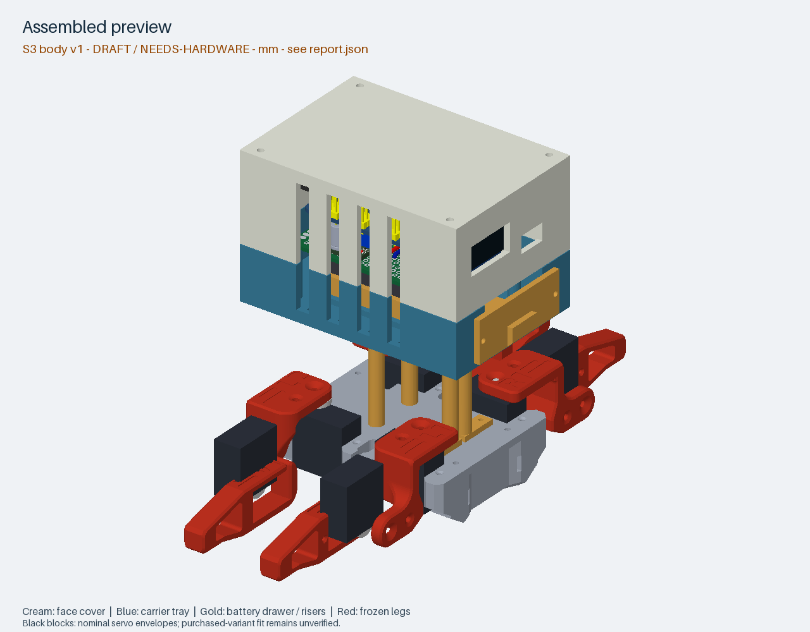
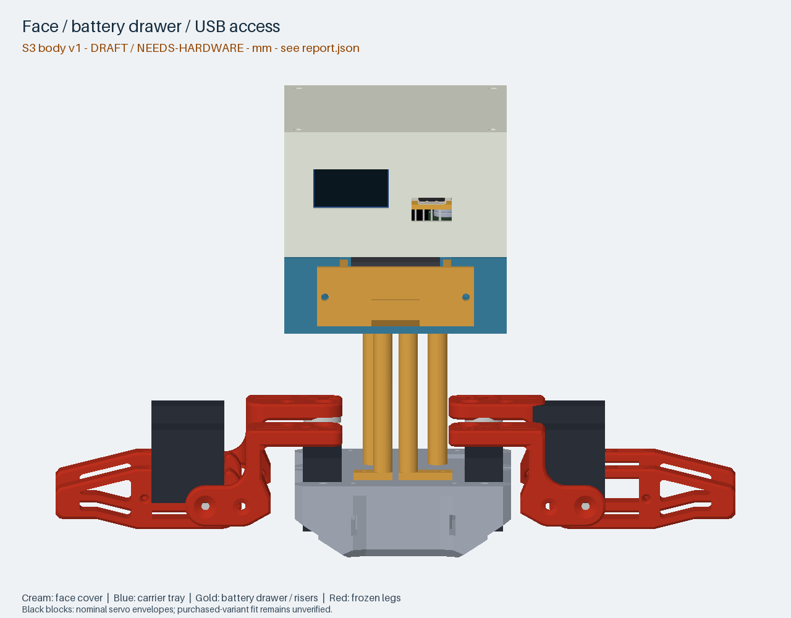
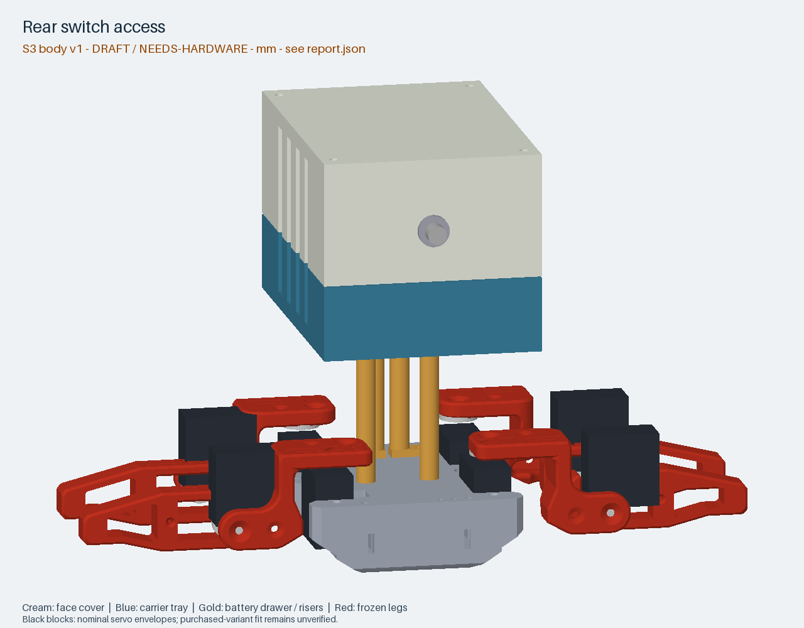
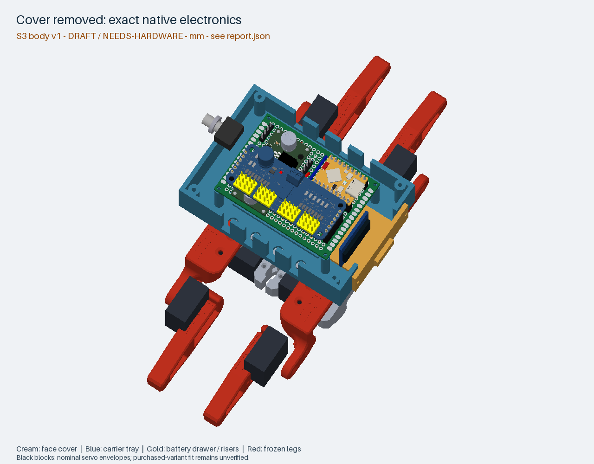
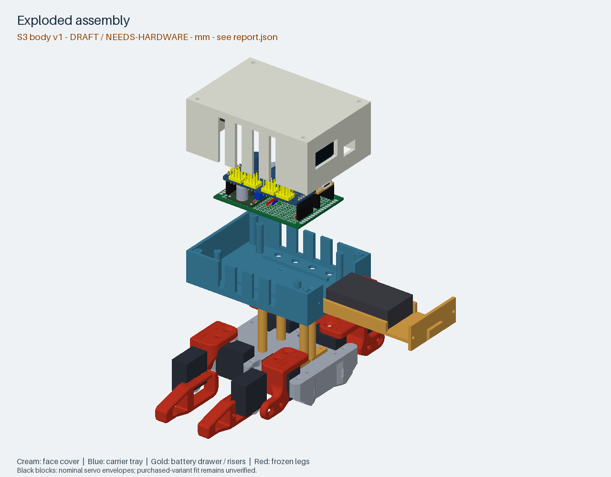
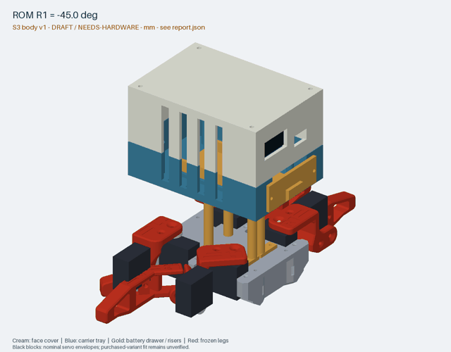

Not print-approved. Read the numerical report and assembly bindings.
{
"body_component_pairs": 6732,
"static_failures": 8,
"body_body_failures": 0,
"rom_pairs": 10656,
"rom_failures": 58,
"invalid_parts": [],
"mesh_or_wall_failures": [
"interface-frame",
"bottom-cover"
],
"alignment_failures": 0,
"new_body_static_failures": 0,
"frozen_interface_static_failures": 8,
"new_body_rom_failures": 0,
"frozen_interface_rom_failures": 58
}




